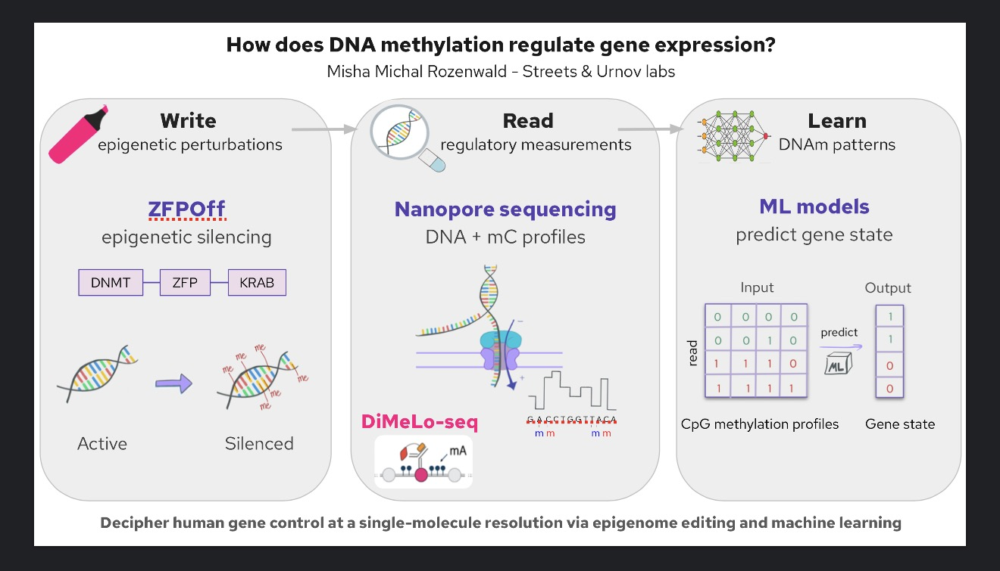
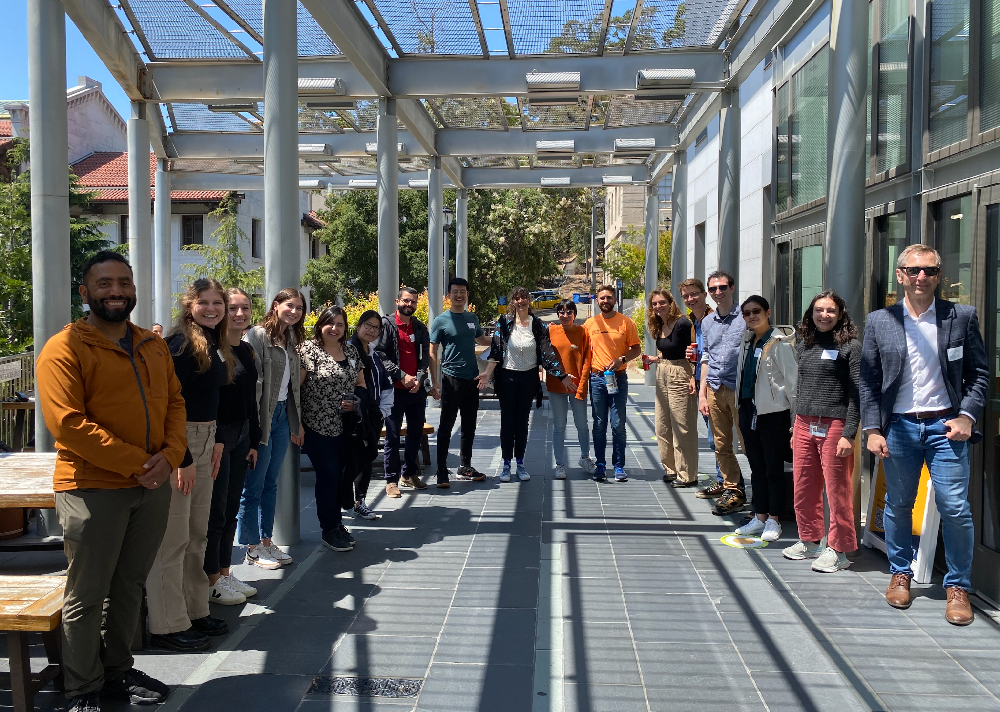

Как метилирование ДНК
управляет работой гена?
Это мой PhD-проект и одновременно основа epicme.bio — открытой научной страницы, где я собираю данные, методы и находки в одном месте. Здесь — введение и контекст: что я изучаю, зачем, и как устроен мой экспериментальный подход.
ZFPoff и CRISPRoff — два альтернативных инструмента эпигенетического «выключения» гена: цинковый палец (ZFP) или dCas9 нацеливает KRAB и DNMT на нужный локус, вызывая CpG-метилирование и молчание гена — без изменения самой последовательности ДНК.
Nanopore-секвенирование (в т.ч. DiMeLo-seq) читает и метилирование, и последовательность ДНК в одной молекуле — на уровне одной цепи, без усреднения по популяции клеток.
Модели машинного обучения ищут связь между профилем CpG-метилирования одной молекулы и состоянием гена — активен он или замолчал.

Зачем вообще изучать эпигеном
Геном человека — это около 3.3 миллиардов пар оснований, и лишь малая его часть — примерно 3 миллиона регуляторных элементов — определяет, когда, где и насколько сильно работает каждый ген.
Эпигеном — это слой химических «пометок» поверх ДНК (например, метилирование цитозинов в CpG-динуклеотидах), который переводит одну и ту же последовательность генома в разные клеточные состояния. Именно эпигенетические пометки во многом объясняют, почему нейрон и T-лимфоцит содержат одну и ту же ДНК, но работают совершенно по-разному. Принципы, по которым эпигенетическая информация управляет экспрессией генов, до сих пор изучены не полностью — это и есть центральный вопрос моей диссертации.
Write, Read, Learn — три инструмента одной задачи
ZFPoff и CRISPRoff: два способа «выключить» ген
В работе я использую два альтернативных инструмента для программируемого эпигенетического молчания CD55 — оба запускают CpG-метилирование локуса и «выключают» ген без разрезания ДНК, в отличие от классического CRISPR-нокаута:
- CRISPRoff — dCas9 под управлением направляющей РНК (sgRNA) доставляет домены KRAB и DNMT3A/3L к нужному локусу.[1]
- ZFPoff — те же домены KRAB и DNMT доставляются белком с цинковыми пальцами (ZFP), нацеленным на локус напрямую, без направляющей РНК.
Оба подхода обратимы и точечны — это позволяет сравнивать, насколько по-разному закрепляется и поддерживается молчание гена в зависимости от способа его «записи».
Nanopore и DiMeLo-seq: чтение на уровне одной молекулы
Технология Oxford Nanopore определяет последовательность ДНК напрямую по изменению электрического сигнала при прохождении молекулы через нанопору — и попутно «видит» метилированные цитозины без бисульфитной конверсии. DiMeLo-seq расширяет это до картирования белок-ДНК взаимодействий на длинных прочтениях.[2][3]
ML-модели: от профиля метилирования к состоянию гена
Каждая просеквенированная молекула даёт бинарный вектор — метилирован ли CpG в конкретной позиции. Собрав такие вектора по многим одиночным молекулам одного и того же локуса, можно обучить модель, которая по CpG-профилю предсказывает, «включён» ген или «выключен» — и находить закономерности, которые не видны при усреднении по популяции клеток.[4]
Модельная система: CD55 в донорских T-клетках
Весь этот подход я применяю к конкретному гену — CD55 (DAF) — и конкретному типу клеток — первичным донорским T-лимфоцитам человека.
Я использую CRISPRoff/ZFPoff для эпигенетического «выключения» CD55 в T-клетках доноров, а затем секвенирую локус CD55 методом Nanopore с прицельным (targeted) захватом — это даёт метилирование и последовательность ДНК с разрешением до одной молекулы, по множеству временных точек после редактирования (например, Day 6, Day 35). Сравнение метилирования между отредактированными (CRISPRoff) и неотредактированными (unedited) клетками одного донора в одной и той же временной точке — основа для понимания того, как закрепляется и поддерживается эпигенетическое молчание гена во времени.
epicme.bio как часть диссертации
epicme.bio — это не просто визуализация данных, а сама PhD-работа, собранная в открытом, интерактивном виде: та же логика Write → Read → Learn, но доступная для изучения любому человеку — от студента до другого исследователя эпигенетики. Название отражает суть темы: epi (редактирование эпигенома) + C (цитозин) + me (метилирование).
Публикация сырых и промежуточных данных, кода обработки и рассуждений в процессе — часть принципа открытой науки, который лежит в основе этого проекта.
Streets & Urnov labs

Источники
-
[1]
Nuñez et al., «Genome-wide programmable transcriptional memory by CRISPR-based epigenome editing» — Cell, 2021
-
[2]
Wang et al., «Nanopore sequencing technology, bioinformatics and applications» — Nature Biotechnology, 2021
-
[3]
Altemose et al., «DiMeLo-seq: a long-read, single-molecule method for mapping protein–DNA interactions genome wide» — Nature Methods, 2022
-
[4]
Yourgenome.org — «What is Oxford Nanopore Technology (ONT) sequencing?»